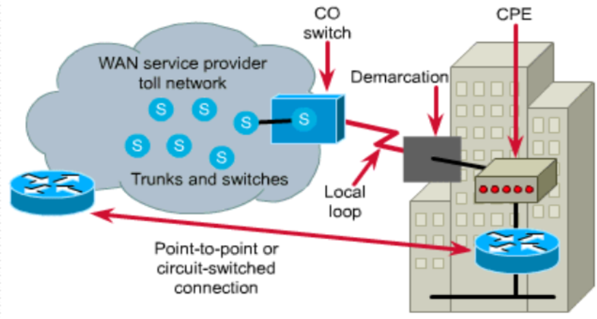
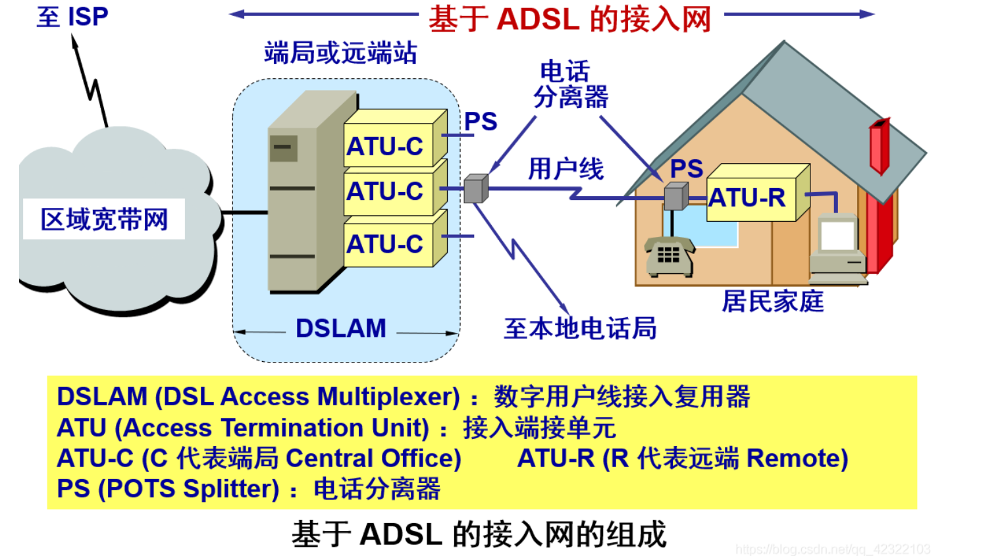
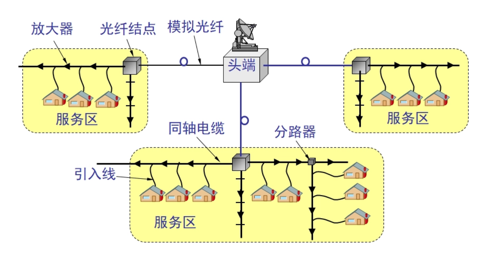

广域网专题

广域网技术与设备
广域网服务概述
广域网是由广域网服务提供商负责建设并管理的沟通各个局域网的网络，运作在OSI参考模型的下三层，但主要运作在下两层，即数据链路层与物理层
广域网物理结构

长途网络
$Toll~Network$，是广域网区域中交换机和主干链路的集合
中心局交换机
$Central~Office~Switch,CO~Switch$，是无线通话协议(Wireless Session Protocol, WSP)服务距离最近的一个节点
用户场景设施
$Customer~Premises~Equipment,CPE$，由ISP提供的或买或租的放置在用户房屋内部的设备
本地回路
$Local~Loop$，指由中心局交换机延申出来直到CPE（或Demarcation）的链路段，由ISP负责，也称为最后一公里
虚链路
$Switched~Virtual~Circuits, SVCs$，指的是在通讯前和通信结束后根据需要建立或拆除的链路，一共有三种状态：
- 链路建立阶段(Circuit establishment)，建立逻辑上的虚链路，只要逻辑链路建立，就有一条物理上的链路路径，但只是临时为其并发服务
- 数据传输(Data transfer)，发送和接收用户数据
- 链路终止阶段(Circuit termination)，拆除逻辑链路，释放当前物理链路路径所占用的带宽资源
使用SVC服务的还有电话网络以及ATM(Asynchronous Transfer Mode，异步传输网络)服务，其特点是增加了对带宽的争用，但降低了建设成本
$Permanent~Virtual~Circuit,PVCs$，指的是永久建立的链路，只具备数据传输一种阶段，使用PVC服务的有X.25和帧中继(Frame Relay)，其特点是减少了带宽争用但是增加了建设成本
广域网设备
为了让用户能够接入租借网络，用户必须要具备：
- 服务供应商电路的接入点
- 一个合适可用的路由器端口
- 调制解调器，ISDN终端适配器等
调制解调器
$Modem$
又可称为$Channel~Service~Units/Digital~Service~Units,CSU/DSU$，即模拟/数字信号服务单元，提供对模拟信号和数字信号之间的转换；其中路由器属于数据终端设备(Data Terminal Equipment, DTE)，调制解调器属于数据链路设备(Data Circuit Equipment, DCE)
广域网和OSI参考模型
广域网主要工作在OSI参考模型的下两层
广域网物理层
包含了描述如何提供广域网服务的协议，同样也描述了DTE与DCE之间的接口
DTE与DCE
一般来说，DCE是服务的提供者，而DTE是接入服务的设备，例如在上面的图中，DTE路由器提供的服务是由DCE调制解调器来进行接入的
定义两者接口的协议
- EIA/TIA-232(RS-232)
- EIA/TIA-449
- V.24
- V.35
- X.21
- G.703
- EIA-530
广域网数据链路层
包含了描述数据帧如何在单独的数据链路上于系统之间传输的协议，主要包含点对点服务，有一些多点服务和非广播多接入交换服务，标准由ITU-T，ISO，IETF，EIA权威组织制定并管理
数据链路层封装
广域网数据链路层定义了数据向远端站点传输时如何进行封装
点对点协议
$\color{red}Point-to-Point~Protocol,PPP$
是ISO标准的一种实现，包含一个协议字段(Protocol Field)来标识网络层协议
高级数据连接控制
$\color{red}High-Level~Data~Link~Control,HDLC$
是ISO标准的原生实现，支持点对点和多点的配置
帧中继
$Frame~Relay$
在高质量数字设施上使用没有错误纠正的简化封装
综合业务数字网
$Integrated~Services~Digital~Network,ISDN$
在已经存在的电话线上传输声音和数据
平衡式链路访问规程
$Link~Access~Procedure-Balanced,LAPB$
在点对点基础上提供可靠性和流控制
广域网接入方法
串线通信的常用通信标准
广域网点对点通信帧封装的最常用标准是PPP和HDLC，其帧结构十分类似
PPP帧封装结构
| Flag | Address | Control | Protocol | Data | FCS | Flag |
|---|
HDLC帧封装结构
| Flag | Address | Control | Proprietary | Data | FCS | Flag |
|---|
具体的选择取决于广域网技术和通信设备
其中PPP是标准穿线通信封装方法，能够识别网络层协议，提供了对链路质量的检查以及通过密码认证协议(Password Authentication Protocol, PAP)和挑战握手认证协议(Challenge Handshake Authentication Protocol, CHAP)进行认证的方法
HDLC是思科设备的串线通信默认封装方法，不提供窗口和流控制，其中Proprietary类型的加入导致了与其他设备不兼容，只能在串线两端均为思科设备时才能使用
PPP/HDLC
PPP是最广泛应用的第二层串线通信协议，由SLIP(Serial Link Internet Protocol)发展而来，SLIP的问题在于仅支持IP协议，不提供动态IP地址分配，用户认证，数据压缩和出错检测；而PPP解决了上面的这些问题，能更好地为第三层提供服务
使用了ISO制定的HDLC标准（不是思科的HDLC）作为封装第三层数据报的基础，为连接的建立，配置选项和链路质量检测实现了LCP(Link Control Protocol)，为选择和配置第三层协议实现了NCP(Network Control Protocol)
帧格式
如上表所示
Flag
标记位，长度为1字节，可能位于帧首部或者帧尾部，如果取值为01111110则说明数据中出现的该字节需要转义
Address
长度为1字节，保留全1字段作为广播地址
Control
长度为1字节，取值为00000011说明用户数据以乱序帧进行传输
Protocol
数据字段采用的协议类型
Data
数据报，最长长度为1500字节
连接建立过程
PPP协议的面向连接的连接总共经过四个阶段，分别是连接建立和配置交流（LCP），链路质量检测，网络层协议配置并开始传输数据（NCP），连接终止
连接建立与配置交流
所有的PPP设备发送LCPs报文以开放连接，其中携带了配置选项字段（允许用户选择压缩和认证协议等），如果没有携带则采用默认值，该过程直到配置确认帧发送并被所有设备收到
链路质量检测
再次发送LCP报文以检测出错率以及是否满足上层的需要，并进行用户认证，LCP可以延迟网络层协议数据的传输直到该阶段完成
网络层协议配置
PPP设备发送NCP报文来选择与配置网络层协议，当所有的网络层协议配置完毕后，数据报就可以在链路上进行传输
连接终止
LCP可以在任意时间因用户要求，链路质量或通信某一方未响应而终止连接；当LCP终止连接后就会通知网络层协议以应对连接变化
PAP
发起方需要输入用户认证信息以确保调用的用户具备网络管理员权限，该过程是一个双向握手过程(Two-way Handshake)，即当发起方（远端节点）发送了用户名与密码后需要认证方进行应答，直到认证完成或者连接终止之前链路上会持续以明文发送用户名和密码对，导致如果用户名与密码在中途被窃听会出现安全问题。一次连接只会进行一次PAP认证
配置方式
encapsulation ppp
#在端口上指定ppp封装类型（HDLC不支持认证）
ppp pap sent-username RTA password cisco
#配置用户名与密码
认证方式
username RTA password cisco
#配置用户名和密码后进入端口模式
clock rate 56000
#时钟同步
encapsulation ppp
ppp authentication pap
CHAP
该过程是一个三向握手过程，CHAP不允许由发起方进行认证，而是由主机(也称为party)发起挑战，发起方接收到挑战之后，需要回传包含挑战报文和用户名密码的加密报文，主机收到加密报文之后进行检查，如果不符合则断开连接，否则认证成功
认证过程
其中挑战报文由挑战报文的类型，挑战次数，随机值和自身hostname组成；发起方根据挑战报文中的hostname找到对应的密码，然后结合挑战次数和随机值为密码加密，回复报文由挑战报文类型（即回传报文），挑战次数，用户名与密码的密文以及自身的hostname组成；主机收到回传报文后，就根据挑战次数和随机值解密，然后结合回传报文中的hostname与记录表中hostname与密码的对应关系进行检查
配置方式
hostname RTA
username RTB password cisco
encapsulation ppp
#在端口上指定ppp封装类型（HDLC不支持认证）
ppp authentication chap
#配置用户名与密码
认证方式
hostname RTB
username RTA password cisco
encapsulation ppp
ppp authentication chap
#与配置方式对称
ISDN
$Integrated~Service~Digital~Network$，综合数字服务网络
特点是能够携带声音，影像和数据；比modem的连接建立过程更快捷，使用带外数据D频道(也称为Delta)和B信道(Barrier)，数据传输速度更快
BRI
$Basic~Rate~Interface$，ISDN服务的一种，提供了两条B信道(64kbps，主要用于电路交换数据，应用于HDLC和PPP)和一条D信道(16kbps，常用于LAPD)，总带宽为144kbps，其中B信道主要用于传输数据和声音，D信道用于发送信号进行管理和配置，以协调B信道的数据传输
PRI
$Primary~Rate~Interface$，另一种ISDN服务，美国标准提供了23条B信道，欧洲标准提供了30条B信道，均提供了一条D信道，可以直接连接CSU/DSU
标准
ISDN使用了一套主要位于物理和数据链路层，设计网络层的标准ITU-T，有多种封装标准可供选择，默认HDLC，也可以使用PPP
ADSL
$X~Digital~Subscriber~Line$，数字用户线，其中的X表示实现的不同宽带方案，例如：
- Asymmetric Digital Subscriber Line，非对称数字用户线（最著名的标准）
- High speed DSL(HDSL)，高速数字用户线
- Single-line DSL(SDSL)，一对线的数字用户线
- Very High Speed DSL(VDSL)，甚高速数字用户线
- IDSL，ISDN用户线
- Rate-Adaptive DSL(RADSL)，速率自适应DSL，是ADSL中的一个分类
利用数字技术对现有的模拟电话用户线进行改造，使其能够承载宽带业务，做法是将0~4kHz低端频谱留给传统电话使用，更高的频谱交给用户上网使用
极限传输距离
用户线越细，电阻越大，信号衰减越强，传输距离越短；同时最高数据传输速率与信噪比密切相关
特点
- 上行和下行宽带不对称，其中上行宽带指从用户到ISP，也称为上传速率；下行宽带指从ISP到用户，也称为下载速率，下载速率一般高于上传速率
- 用户线两端各有一个Modem
- 目前我国采用的方案是离散多音调(Discrete Multi-Tone, DMT)，有多载波或多子信道的含义
DMT
离散多音调技术采用频分复用的方法，将40kHz以上一直到1.1MHz的高端频谱划分为许多子信道，由于用户的下载需求往往远远大于上传需求，因此其中有25个子信道用于上行通道，249个子信道用于下行通道，每个子信道占据约4kHz带宽，使用不同的载波进行数字调制，使得在一对数字线上可以使用许多小的调制解调器并行地传送数据
数据率
由于用户线的具体条件受到距离、线径、受干扰程度地影响往往相差甚远，因此ADSL采用自适应调制技术使得用户线能够传送尽可能高的数据率，通常是在ADSL启动时测试可用频率、受干扰情况和传输质量，ADSL不能保证固定的数据率，质量很差的用户线甚至不能开通ADSL。通常上行速率在32kb/s到640kb/s之间，而下行速率在32kb/s到6.4Mb/s之间

第二代ADSL
第二代ADSL增大的频道的宽度，提高了调制效率，从而获得了更高的数据率；同时也采用了无缝速率自适应技术SRA(Seamless Rate Adaptation)，可以在不中断通信和不产生误码的情况下自适应调整数据率
SONET
SONET的提出主要是为了解决旧传输系统速率标准不统一和准同步而非同步传输的方式
同步光纤网
$Synchronous~Optical~Network$的各级时钟都来自精确的铯原子钟，精度优于$10^{-11}s$，第一级同步传送信号STS-1(Synchronous Transport Signal)的传输速率达到51.84Mb/s，其对应的光信号称为第一级光载波OC-1(Optical Carrier)，第n级的传输速率为第一级的n倍，STS帧为时分复用帧，速率为8000帧/秒
同步数字系列
$Synchronous~Digital~Hierarchy$是由ITU-T以美国标准SONET为基础制定的国际标准，一般可认为SDH和SONET是同义词，SDH的基本速率达到155.52Mb/s，称为第一级同步传递模块(Synchronous Transfer Module, STM-1)，相当于SONET中的OC-3
SONET体系结构
SDH终端发出的信号由复用器或分用器进行复用，然后交给转发器转发，转发器和复用器之间的链路称为段(section)，复用器之间的链路称为线路(line)，而终端之间的链路称为路径(path)
SONET标准的四个光接口层
- 光子层(Photonic Layer)，负责处理跨越光缆的比特传送
- 段层(Section Layer)，负责在光缆上传输STS-N帧
- 线路层(Line Layer)，负责路径层的同步和复用
- 路径层(Path Layer)，负责处理路径端接设备PTE(Path Terminating Element)之间的业务传输
HFC
$Hybrid~Fiber~Coax$是在目前覆盖面很广的有线电视网CATV（采用树形拓扑的同轴电缆网络，采用模拟信号的频分复用对电视节目进行单向传输）的基础上开发的居民宽带接入网，可附加提供电话、数据和其他宽带交互型业务
主要特点
将同轴电缆部分该换为光纤，并使用了模拟光纤技术，在模拟光纤中采用光的振幅调制AM，比数字光纤更经济。模拟光纤从头端连接到光纤节点(fiber node)，即光分配节点ODN(Optical Distribution Node)，在ODN转换为电信号，随后是同轴电缆部分

HFC具有比CATV更宽的频谱，具有双向传输的功能
用户接口盒UIB
$User~Interface~Box$需要提供三种连接，分别是同轴电缆连接到机顶盒(set-top box)，然后再连接到电视机；使用双绞线连接到电话机；使用电缆调制解调器连接到用户计算机
电缆调制解调器
$Cable~Modem$是为HFC使用的调制解调器，传输速率高，下行速率在3到10Mb/s之间，最高可达30Mb/s，而上行速率一般在0.2到2Mb/s之间，最高可达10Mb/s；其结构比一般的Modem复杂得多，并且不对称分布，只在用户端安装
优点
频带宽，并且可利用覆盖面相当广的有线电视网
FTTX技术
表示光纤到……，也是一种实现宽带居民接入网的方案
- FTTH(Fiber To The Home)，光纤到家，还需要一定发展的时间
- FTTB(Fiber To The Building)，光纤到楼，在大楼内使用电信号依靠电缆或双绞线传输
- FTTC(Fiber To The Curb)，光纤到路，从路边到用户使用星型拓扑，以双绞线作为传输媒体